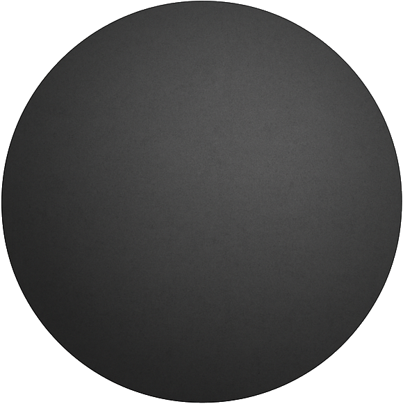
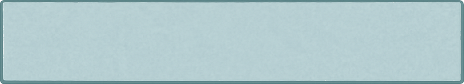

🔧 Réglages
• Matériau à tester : sélectionnez le type de matériau à soumettre à l’impact. Il peut s’agir de vitres (en verre simple, trempé, polycarbonate…) ou de portes (en bois, acier, composite…).
• Masse du projectile : valeur en kilogrammes (kg). Elle correspond à la masse de l’objet qui va être lâché.
• Hauteur du projectile : définie en déplaçant la boule avant la simulation. Elle est exprimée en mètres (m).
• Nombre d’impacts : choisissez si le projectile est lancé une seule fois ou trois fois successivement (norme applicable aux portes).
Matériau à tester :
Simple vitrage (4 mm)
Masse du projectile (kg) :
▲
▼
Hauteur actuelle :
2.00 m
1 impact
3 impacts
⚡ Énergie :
...
L’énergie d’impact correspond à l’énergie cinétique accumulée par le projectile au moment du choc avec le matériau.
Formule : E = m × g × h
• E = énergie (en joules, J)
• m = masse du projectile (en kilogrammes, kg)
• g = gravité (9,81 m/s²)
• h = hauteur de chute (en mètres, m)
🧩 État du matériau :
...
Le matériau peut réagir différemment selon l’énergie du projectile. Les termes varient selon qu’il s’agit d’une vitre ou d’une porte :
Pour les vitres :
• Intact : aucun dommage visible
• Fissuré : des fissures apparaissent, mais le vitrage reste globalement en place
• Cassé : le verre est brisé, avec des morceaux détachés ou des éclats visibles
Pour les portes :
• Intact : aucune déformation ni trace visible
• Déformée : la porte est visiblement enfoncée, mais reste fermée
• Fracturée : la porte est cassée ou suffisamment dégradée pour être franchissable

